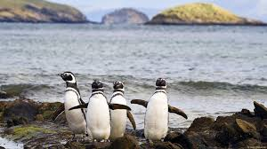
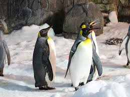
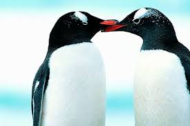
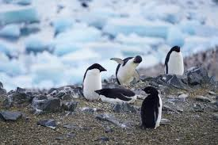

Los pingüinos han existido por millones de años, evolucionando para adaptarse perfectamente a la vida marina. Estos fascinantes animales son considerados fósiles vivientes, ya que su linaje se remonta a la época de los dinosaurios.
Se cree que los primeros pingüinos surgieron hace aproximadamente 60 millones de años en el hemisferio sur, poco después de la extinción de los dinosaurios. Los pingüinos prehistóricos eran mucho más grandes que sus descendientes actuales, con algunas especies alcanzando hasta 1.7 metros de altura.
La evolución de los pingüinos es un claro ejemplo de adaptación al medio acuático. Sus alas se transformaron en aletas eficientes para nadar, mientras que su denso plumaje y capa de grasa los protege de las gélidas temperaturas de su hábitat natural.
Los pingüinos son aves marinas no voladoras que pertenecen a la familia Spheniscidae. A diferencia de la mayoría de las aves, sus alas se han convertido en aletas, lo que los hace excelentes nadadores pero incapaces de volar. Existen 18 especies de pingüinos reconocidas actualmente.
El plumaje de los pingüinos está especialmente diseñado para mantenerlos calientes en ambientes fríos. Cuentan con una capa externa de plumas impermeables y una densa capa interna que atrapa el aire, proporcionando aislamiento térmico. Además, poseen una gruesa capa de grasa subcutánea que los protege del frío extremo.
Los pingüinos pasan aproximadamente el 75% de su vida en el agua, donde son ágiles y veloces, alcanzando velocidades de hasta 40 km/h. En tierra, su movimiento característico es el "caminar como pingüino", aunque algunas especies pueden deslizarse sobre el vientre en la nieve (tobogganing) para ahorrar energía.

Curiosidades
Los pingüinos pueden beber agua salada gracias a unas glándulas especiales ubicadas cerca de sus ojos que filtran el exceso de sal, la cual es excretada en forma de líquido concentrado.
El pingüino emperador es capaz de sumergirse a profundidades de más de 500 metros y contener la respiración durante casi 30 minutos, uno de los récords entre las aves.
Los pingüinos tienen un sistema de comunicación complejo que incluye vocalizaciones y lenguaje corporal. Cada pingüino tiene una llamada única que permite a sus parejas y crías reconocerlos.
Algunas especies de pingüinos pueden lanzarse al agua desde alturas de hasta 6 metros, alcanzando velocidades de 20 km/h al entrar al agua.
Los pingüinos tienen una glándula especial cerca de la cola que produce un aceite que extienden por sus plumas con el pico para impermeabilizarlas.

Importancia
Los pingüinos juegan un papel vital en los ecosistemas marinos como reguladores de las poblaciones de peces, krill y calamares. Su presencia y estado de salud son indicadores importantes de la salud general de los océanos.
Como depredadores intermedios, contribuyen significativamente a la cadena alimentaria marina. Son presa importante para focas leopardo, leones marinos y orcas, mientras que controlan las poblaciones de sus propias presas, manteniendo el equilibrio ecológico.
Los pingüinos también son importantes para el ciclo de nutrientes en los ecosistemas antárticos. Sus excrementos (guano) son ricos en nitrógeno y fósforo, fertilizando las aguas costeras y promoviendo el crecimiento de fitoplancton, base de la cadena alimentaria marina.
Desde el punto de vista científico, los pingüinos son valiosos indicadores del cambio climático. Las alteraciones en sus poblaciones y patrones de reproducción proporcionan datos cruciales sobre los efectos del calentamiento global en los ecosistemas polares.
Pingüino Emperador (Aptenodytes forsteri): El más grande de todos, vive exclusivamente en la Antártida y es famoso por su increíble resistencia al frío.
Pingüino de Adelia (Pygoscelis adeliae): Reconocible por su anillo blanco alrededor del ojo, habita en la costa antártica.
Pingüino Rey (Aptenodytes patagonicus): Segundo en tamaño, se distingue por sus brillantes manchas naranjas en las mejillas y pecho.
Pingüino de Magallanes (Spheniscus magellanicus): Habita las costas de Argentina, Chile y las Islas Malvinas, con distintivas bandas blancas y negras.
Pingüino Azul (Eudyptula minor): El más pequeño, mide solo 30-40 cm y vive en las costas de Australia y Nueva Zelanda.
La distribución de las especies de pingüinos varía significativamente. Mientras algunas como el Emperador y el de Adelia habitan exclusivamente en la Antártida, otras como el de Magallanes o el Africano (Spheniscus demersus) se encuentran en climas más templados de Sudáfrica y Sudamérica. Cada especie ha desarrollado adaptaciones específicas a su entorno particular.

Comportamiento
Los pingüinos son aves extraordinariamente sociables que viven en grandes colonias que pueden contar con miles de individuos. Esta vida en comunidad les proporciona protección contra depredadores y ayuda a mantener el calor en los climas fríos.
Muchas especies realizan impresionantes migraciones anuales en busca de alimento y áreas de reproducción. El pingüino Adelia, por ejemplo, puede viajar hasta 13,000 km en un año entre sus áreas de alimentación y reproducción.
El comportamiento reproductivo de los pingüinos es particularmente fascinante. La mayoría son monógamos durante una temporada, y algunas especies como el pingüino emperador forman parejas estables durante años. Los rituales de cortejo incluyen vocalizaciones complejas y exhibiciones corporales sincronizadas.
Los pingüinos muestran comportamientos cooperativos notables, como el "tobogganing" (deslizarse sobre el vientre) para ahorrar energía, o formar "tortugas" (grupos compactos) para protegerse del frío extremo, rotando los individuos del centro hacia el exterior para compartir el calor.
Alimentación
Peces: Constituyen la dieta principal de muchas especies, incluyendo anchoas, sardinas y bacalao antártico.
Krill: Pequeños crustáceos que forman enormes bancos en aguas antárticas, base alimenticia de especies como el pingüino de Adelia.
Calamares: Importantes en la dieta de especies más grandes como el pingüino emperador.
Crustáceos: Además del krill, algunas especies consumen otros crustáceos como los anfípodos.
Los pingüinos son excelentes cazadores submarinos, utilizando su velocidad (hasta 40 km/h) y agilidad para atrapar presas. Pueden realizar hasta 450 buceos en un solo día en busca de alimento. Sus ojos están adaptados para ver claramente bajo el agua, y algunas especies pueden detectar presas por bioluminiscencia.
La dieta varía según la especie, la temporada y la disponibilidad de presas. Los pingüinos adultos pueden consumir entre 0.5 y 1 kg de alimento diario, cantidad que aumenta significativamente durante la temporada de cría cuando deben alimentar a sus polluelos.

Tabla Comparativa
Especie
Tamaño
Característica única
Pingüino Emperador
1.1 - 1.3 m
Resiste temperaturas extremas de -60°C
Pingüino de Adelia
70 - 75 cm
Anillo blanco alrededor de los ojos
Pingüino Rey
85 - 95 cm
Manchas naranjas brillantes en cabeza y pecho
Pingüino Azul
30 - 40 cm
El pingüino más pequeño del mundo
Página Externa
La siguiente sección muestra contenido embebido de la Global Penguin Society, una organización dedicada a la conservación de los pingüinos en todo el mundo: